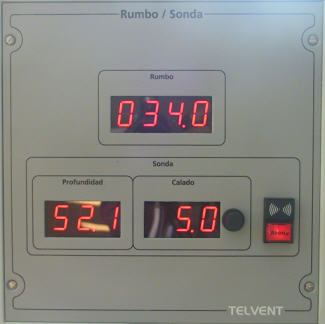
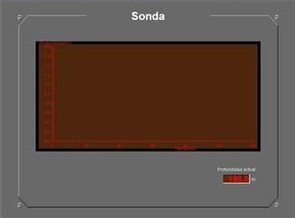

El módulo de Sonda muestra de forma continua al operador el rumbo de la unidad controlada, y la profundidad en el punto en el que se encuentra.
La versión hardware y la versión software de este panel son diferentes. A continuación se describen detalladamente ambas versiones.
Versión Hardware:

Dispone de los siguientes elementos:
Indicador digital de Rumbo: indicador digital de cuatro dígitos, en el que se muestra el rumbo aparente del buque en grados.
Indicadores de la b:
Ecosonda
- Indicador digital de Profundidad: indicador digital de tres dígitos, en el que se muestra la profundidad en metros detectada por este equipo en el punto en el que se encuentra la unidad simulada, más el valor seleccionado por operador de Calado del buque, con precisión de décimas de metros si el valor es menor que 100 y con precisión de metros si es mayor o igual que 100. Por tanto, si el operador introduce correctamente el calado del buque, este valor coincidirá con la profundidad medida desde la superficie del agua.
- Indicador digital de Calado del Buque: indicador digital de tres cifras en el que se muestra el calado en metros seleccionado por el operador, con precisión de décimas de metros.
- Selector de Calado del Buque: selector giratorio mediante el cual el operador puede modificar el calado del buque tenido en cuenta para la profundidad mostrada. Moviéndolo hacia la derecha se incrementa este valor y hacia la izquierda disminuye, con un rango de 0 a 99,9.
- Alarma Sonora: zumbador para la alarma acústica de avería de la Ecosonda.
- Indicador de Avería de la Ecosonda y Pulsador de Enterado: este indicador rojo se ilumina de forma intermitente en rojo cuando el instructor introduce una condición de avería en el equipo sondador. Cuando el operador lo presiona (reconociendo la avería), el indicador se ilumina de forma fija, y finalmente se apaga cuando el instructor elimina la condición de avería de este equipo.
Versión Software:

En este panel simula un equipo sonda, que incluye representación gráfica del perfil de profundidades por donde navega el buque, con un muestreo de la profundidad por segundo.
El campo Profundidad Actual muestra el valor de la distancia desde la posición de la sonda hasta el fondo del mar.
El instructor establece la posición de la sonda en el buque mediante la ventana de configuración de la sonda durante la preparación del ejercicio (ver el apartado Preparación del Ejercicio en el Manual de Instructor). La posición de la sonda se puede cambiar durante la ejecución del ejercicio.